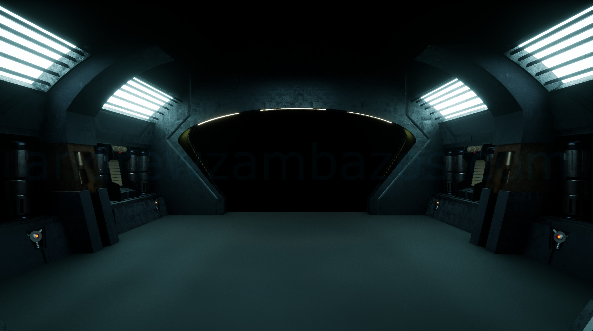
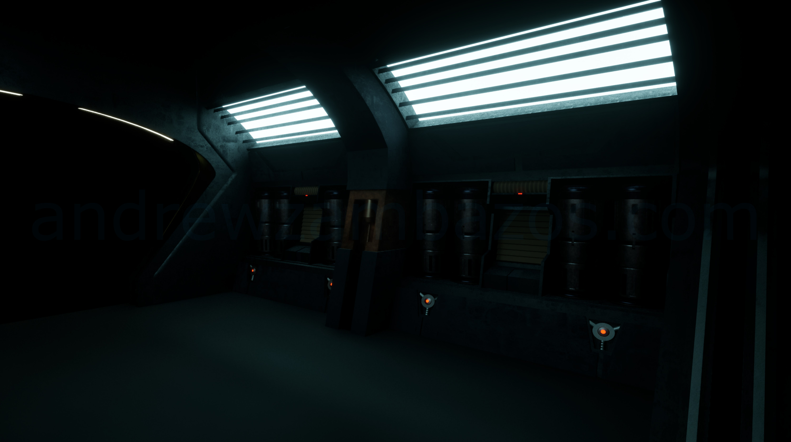
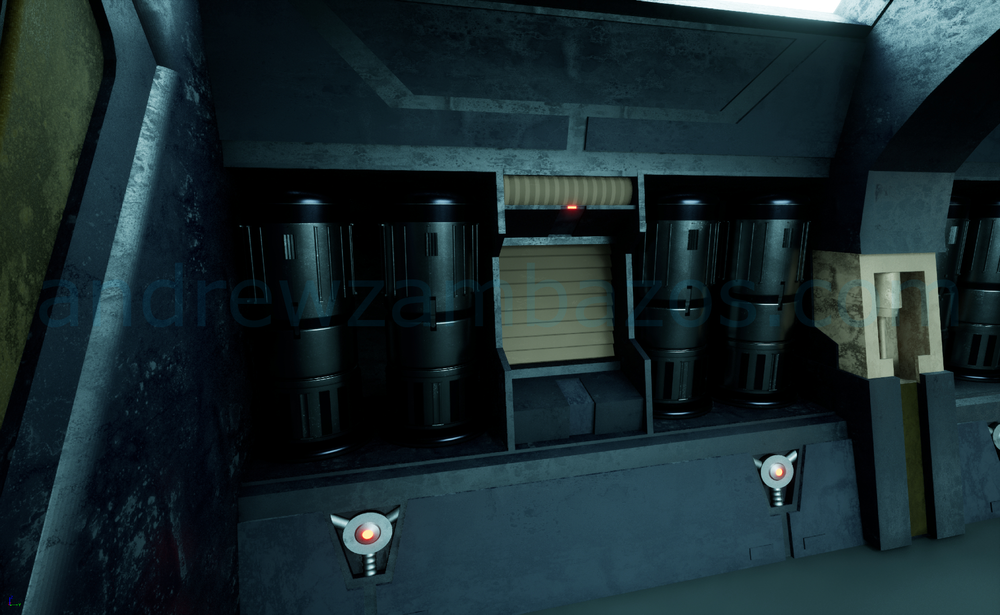
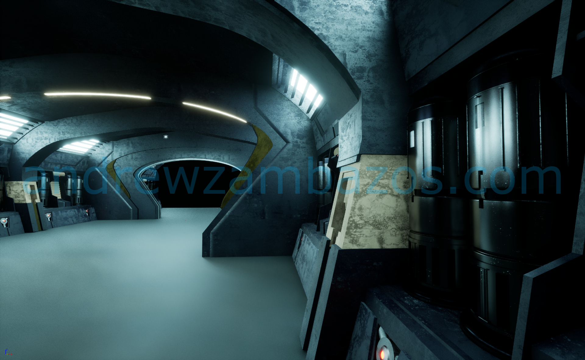
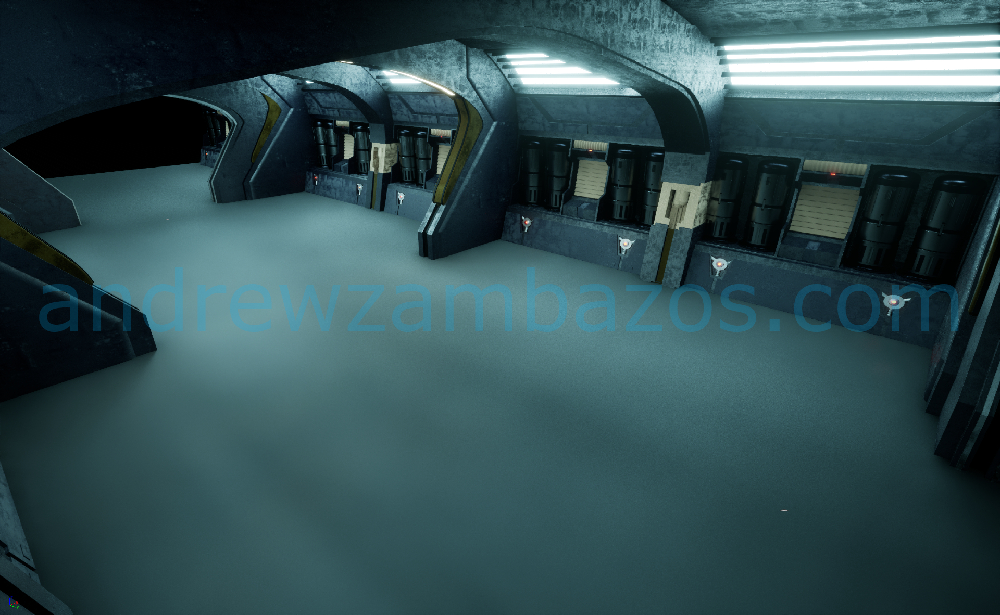
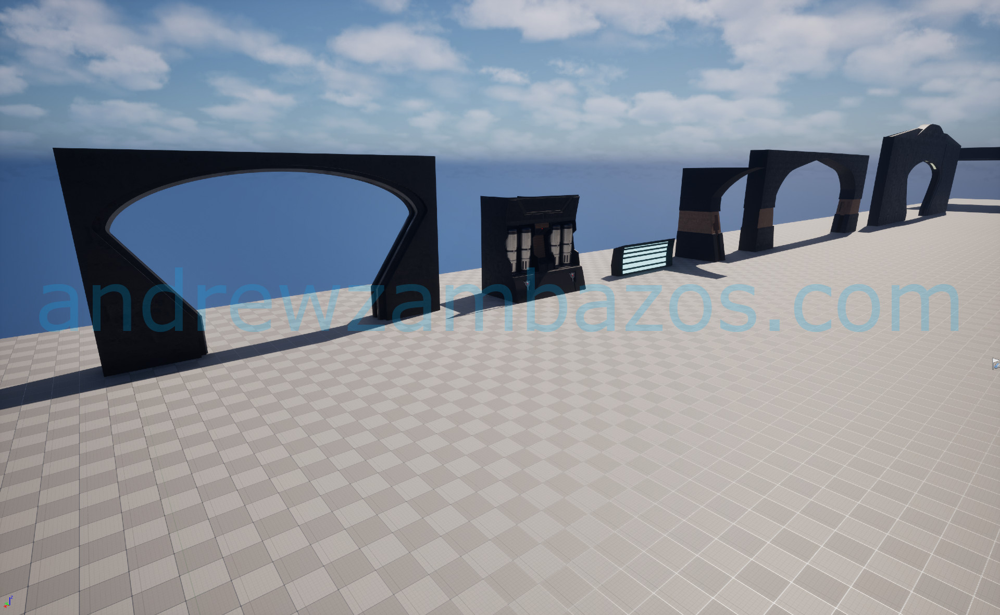
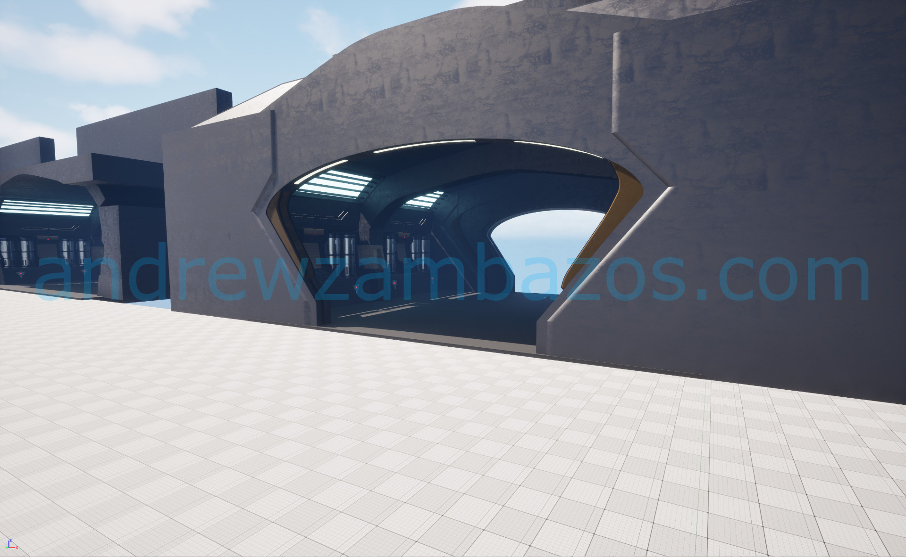

Star Wars Corridor
Bringing iconic Star Wars aesthetics to life through meticulously detailed environmental design in Unreal Engine 5.
Project Overview
This project focuses on bringing the iconic design language of the Star Wars universe to life through a highly detailed corridor inspired by concept art from Star Wars Battlefront II. The goal was to create an environment that feels authentic to the Star Wars galaxy, blending futuristic industrial design with atmospheric lighting to create an immersive and believable setting.
Translating concept art into a fully realized 3D environment presents several challenges, including maintaining visual fidelity while ensuring the design is optimized for real-time rendering. Balancing detailed geometry with efficient performance was critical, as was capturing the atmospheric mood that defines Star Wars interiors.
Design & Development
Modeling & Detail
The design process began by analyzing the source concept art to identify key visual elements such as color schemes, textures, and lighting. The corridor was meticulously modeled in Blender, focusing on intricate paneling, piping, and surface wear to reflect the utilitarian Star Wars aesthetic.
Rendering & Optimization
Once imported into Unreal Engine 5, Lumen was used to implement dynamic lighting, enhancing the realism with subtle reflections and shadows. Nanite technology allowed for high-polygon assets without compromising performance, ensuring a seamless and immersive experience.
Key Features
- • Detailed Modeling: Highly detailed models including modular wall panels, conduits, and control terminals.
- • Dynamic Lighting: Real-time reflections, shadows, and ambient light capture the dark and atmospheric tone.
- • Atmospheric Design: Environmental storytelling through props and texture details create a sense of history and function.
Project Gallery








